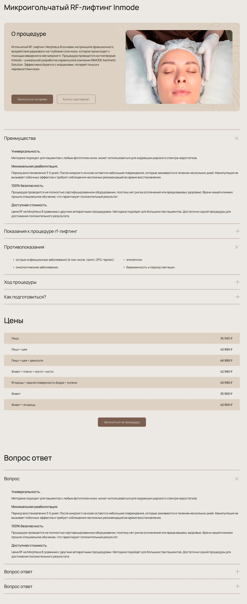
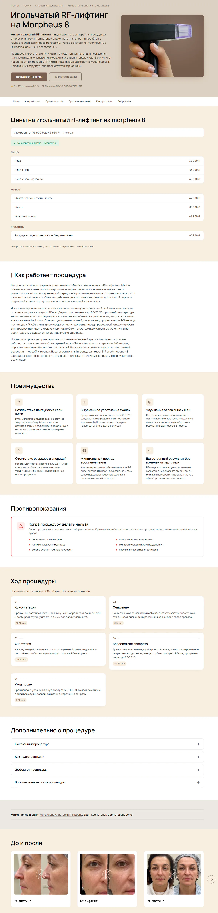

обращения из поиска
за май–июль 2026
Рост поискового трафика, позиций и обращений — по данным аналитики сайта и коллтрекинга
Смотреть результатыза май–июль 2026
420 → 1 161 визит
94% — в ТОП‑10 к 30 июля
За пять месяцев поисковый трафик вырос с 420 до 1 161 визита в месяц. В мае он остался на том же уровне — 1 152 визита. Это показывает, что уровень видимости сайта продолжает оставаться высоким.
Поисковый трафик из Яндекса и Google
2,8×
Источник: Яндекс Метрика. На графике показаны полные календарные месяцы.
С мая SEO стало основным источником обращений с сайта: за три месяца поиск принёс 142 обращения против 85 из контекстной рекламы. Клиника получила ещё один полноценный канал привлечения пациентов и стала меньше зависеть от платного трафика.
Обращения из SEO и контекстной рекламы
Источник: Calltouch. Учитываются отслеживаемые звонки и заявки с сайта.
К концу июля сайт находился на первой странице Google по 94% отслеживаемых запросов, а по 73% — в первой тройке. Одновременно клиника стала значительно чаще появляться в Google по запросам, связанным с косметологическими услугами.
Динамика позиций по 233 целевым запросам
декабрь 2025 — июль 2026
Как росла видимость сайта в Google
до 50 тыс.
показов в Google в месяц против 5,6 тыс. в начале периода
Источник: Google Search Console · полные месяцы.
Работу начали с совершенно нового сайта, у которого ещё не было позиций и поискового трафика. Фактически продвижение начинали с нуля. Новым сайтам сложнее занимать хорошие позиции в поиске, поэтому начали с основы — технической оптимизации, структуры и содержания — и дальше поэтапно развивали сайт.
Техническая основа
Провели технический и SEO-аудит, исправили ошибки, которые мешали поисковым системам корректно индексировать и понимать страницы. Ускорили загрузку сайта и оптимизировали изображения.
−69% вес главной страницы: с 7,09 до 2,17 МБ
Структура
Сгруппировали услуги по направлениям и задачам пациента, добавили новые подразделы и отдельные страницы под конкретные процедуры. Теперь из поиска человек попадает сразу на страницу, которая точнее отвечает на его запрос.
Страницы
Переписали 68 страниц услуг и пересобрали их структуру. Добавили цены, показания и ограничения, этапы процедуры, подготовку, восстановление, сравнения и ответы на частые вопросы.
Страницы стали лучше соответствовать требованиям поисковых систем и давать пациентам нужную информацию перед записью.
Выбор услуги
На страницах «Решить проблему» добавили ссылки на подходящие процедуры и цены. На страницах услуг — на связанные методы, оборудование и примеры работ.
Пациенту стало проще разобраться в вариантах и перейти к подходящей процедуре.
Изменения внедряли поэтапно, сохраняя уже работающие страницы и поисковый трафик.
Добавили больше полезной информации и разбили её на понятные смысловые блоки: цены, показания и ограничения, этапы, результаты, врачей и частые вопросы. Страницу стало проще просматривать и находить нужную информацию.
Информация шла длинным потоком, важные сведения терялись среди остальных блоков

Открыть крупноБольше полезной информации, понятная структура и акцент на том, что важно пациенту перед записью

Открыть крупноНа примерах показаны разные услуги. Здесь сравниваем подход к оформлению и структуре страниц до и после переработки.
У каждой клиники своя стартовая ситуация, поэтому решения не копируем один в один. Сначала анализируем сайт и текущее состояние проекта. Определяем, где есть потенциал роста, и уже под это формируем план работ.
alexandrov digital agency